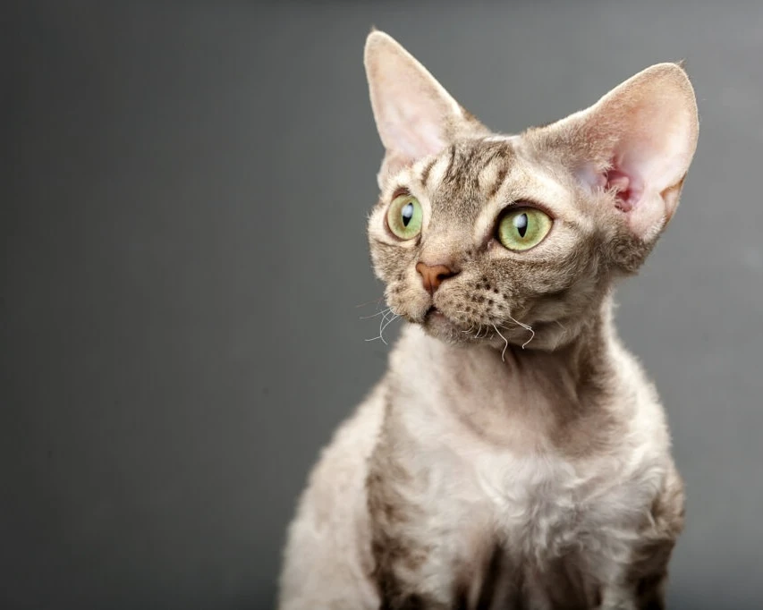
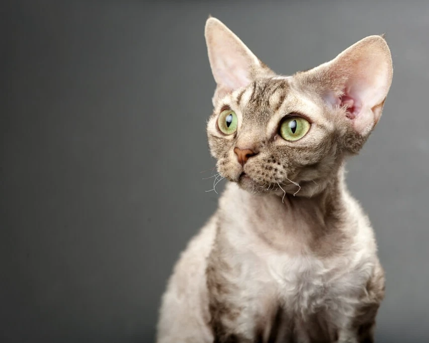
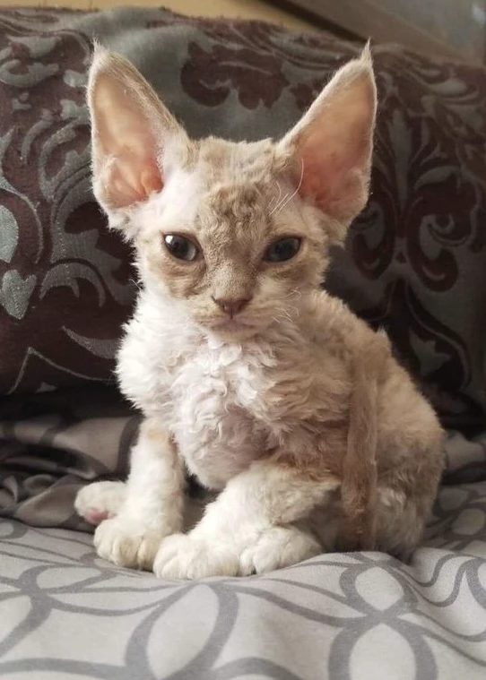
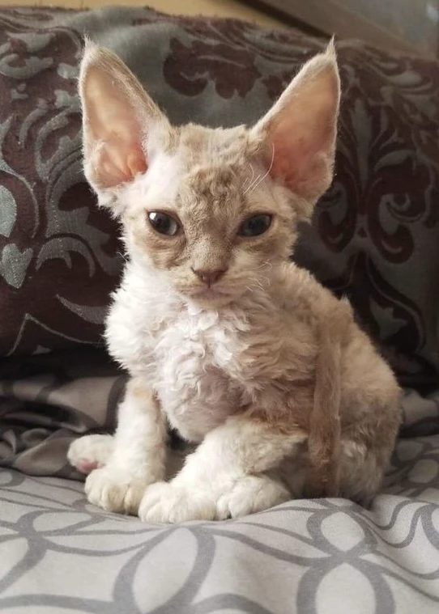
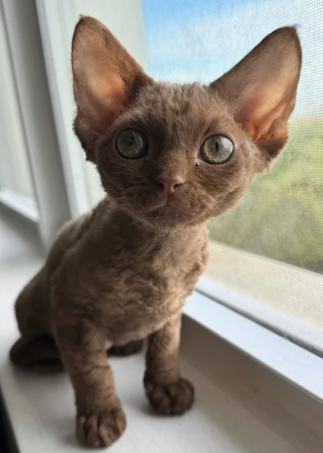
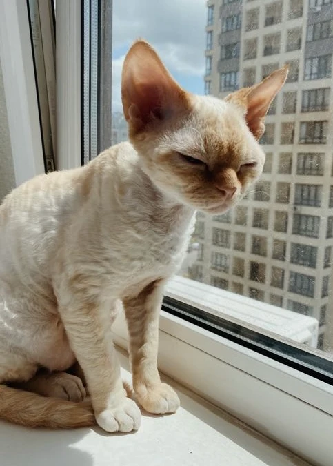
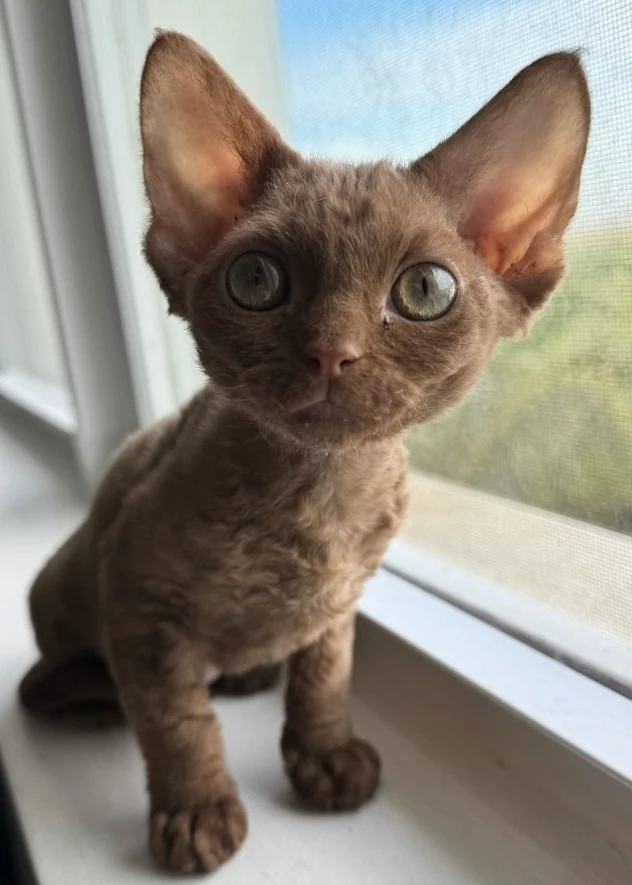
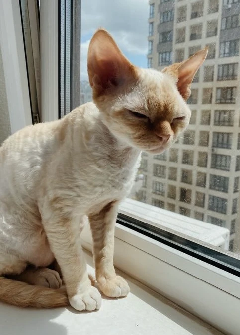

Devon Rex
Explore the charm of Devon Rex cats - quirky, cuddly, and utterly captivating. Dive in and discover the magic of this unique breed!

History
The Devon Rex breed originated from a natural mutation found among non-pedigree cats in Devon, England. Kirlee, born on July 15, 1959, emerged as the first Devon Rex, distinguished by his curly coat. Adopted by Miss Beryl Cox and Miss Margaret Croll of Buckfastleigh, Devon, Kirlee's uniqueness came to light when a newspaper article featured another curly-coated kitten, Du-Bu Lambtex, scheduled for exhibition at a prestigious cat show. Miss Cox reached out to the breeder, Mrs. Agnes Watts, revealing Kirlee's similar trait, thus initiating his recognition.
Initially presumed to share the same mutation as the Cornish Rex due to their geographic proximity, further breeding experiments involving Kirlee and Cornish Rex variant queens disproved this assumption. Subsequent breeding efforts, albeit challenging due to limited breeding stock and reluctant breeders, revealed the Devon Rex as a distinct mutation. Despite their independent development, Devon Rex cats worldwide retain significant Cornish Rex ancestry, as evidenced by early breeding efforts aimed at establishing the breed. This unique lineage underscores the Devon Rex's singular position among feline mutations, with no other Rex mutation found compatible with its genetic makeup.
Traits
Lap Cat
The Devon Rex is an affectionate and devoted lap cat, seeking warmth, attention, and closeness with its human companions.
Intelligent
Known for its sharp intellect, it is quick to learn and enjoys engaging in interactive activities, play, and problem-solving.
Easy to Training
With its high intelligence and eagerness to please, responds well to training, making it easy to teach new behaviors and tricks.
Low Grooming
Due to its short, curly coat, it requires only occasional brushing to remove loose hair and maintain skin health and shine.
Low Shedding
Their unique coat results in very minimal shedding, the ideal choice for people with allergies or seeking low-maintenance pet.
Good with Children
Gentle and tolerant, is well-suited for households with children, forming strong bonds with younger family members.
Good with Dogs
Social and adaptable, typically gets along well with dogs, forming friendships and enjoying shared activities with canine companions.
Chatty
With an expressive nature, is often quite vocal, engaging in conversation with its human through a range of chirps, trills, and meows.
Care
Devon Rex cats are ideal for keeping indoors, especially as their unusual fur will not protect them very well from the cold, wet and sunburn.
Keep tabs on this cat because it tends to slip in tight, narrow places like behind your sofa or refrigerator.
They are very playful and active cats. They therefore need space to romp around.
They get along very well with other cats, so you should give your Devon Rex a playmate.
Devon Rex cats love people and cannot stand being alone for long periods.
Without suitable outlets for their high energies, they may resort to swinging like monkeys on drapes and blinds.
Love to be loved and hate to be bored.
Gallery

 

 

 


